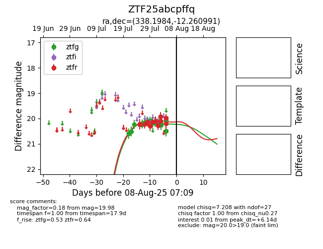

Target ZTF25abcpffq at 2025-08-08 09:00, see:
FINK: fink-portal.org/ZTF25abcpffq
Lasair: lasair-ztf.lsst.ac.uk/objects/ZTF25abcpffq
ALeRCE: alerce.online/object/ZTF25abcpffq
alt names
ZTF25abcpffq (ztf,fink)
coordinates:
equatorial (ra, dec) = (338.1984,-12.26099)
galactic (l, b) = (50.6451,-54.30943)
photometry
last ztfg=20.49, ztfr=19.98
20 ztfg, 12 ztfr detections
